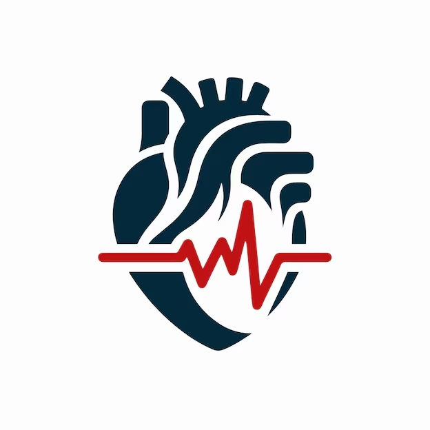
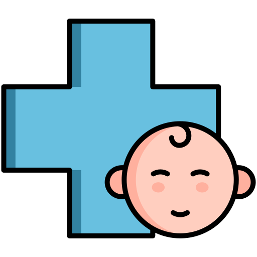
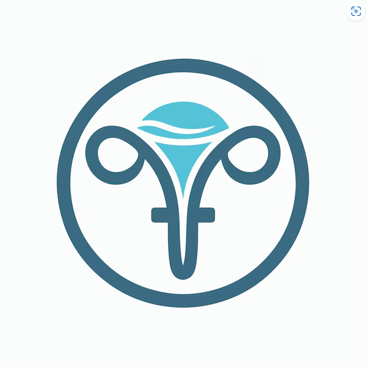
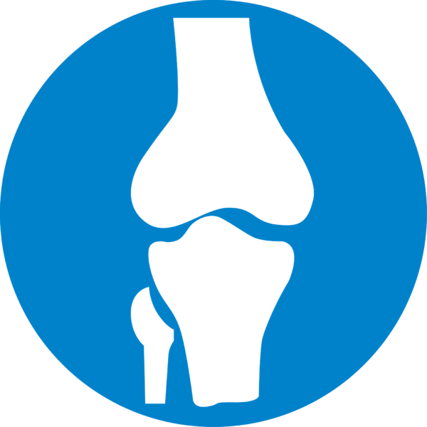
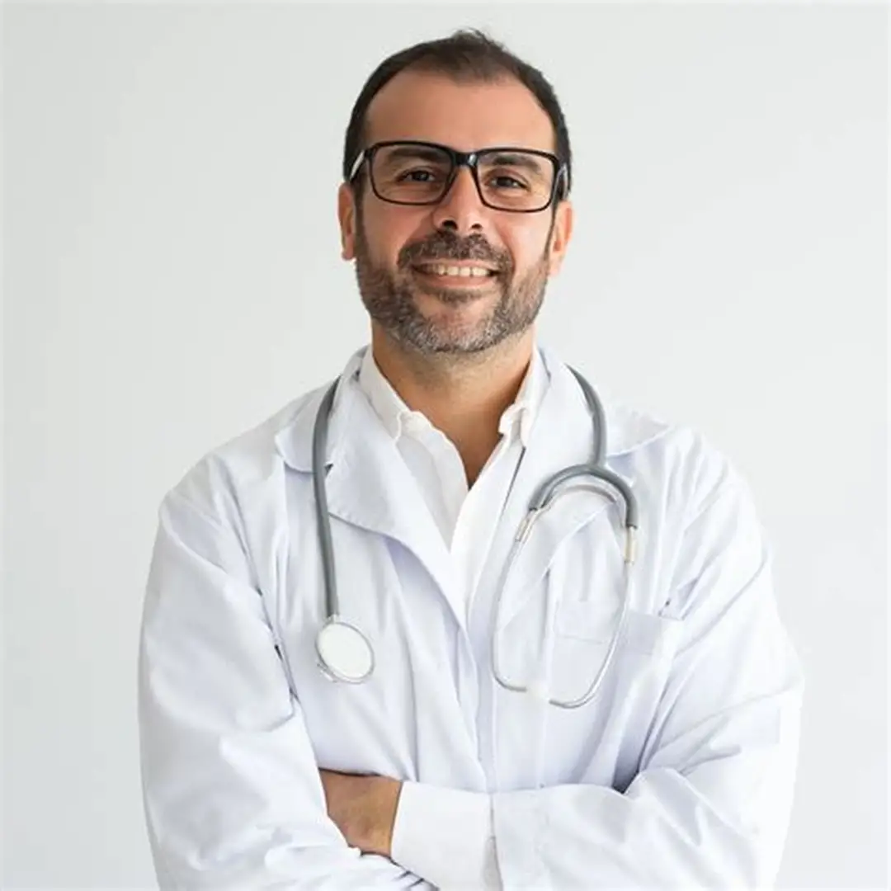

Clínica General
Atención integral con foco en prevención, diagnóstico y seguimiento de la salud familiar.
Clínica integral de confianza
En SaludPlus combinamos experiencia, tecnología y calidez para acompañarte desde el diagnóstico hasta el tratamiento.
Descubre nuestras áreas de atención con especialistas preparados para cada etapa de tu salud.
Atención integral con foco en prevención, diagnóstico y seguimiento de la salud familiar.

Diagnóstico y tratamiento de enfermedades del corazón con tecnología moderna y experiencia.

Atención cálida para bebés, niños y adolescentes con un equipo especializado en cuidados infantiles.

Consultas ginecológicas, controles preventivos y acompañamiento de la salud femenina.

Tratamiento de lesiones musculoesqueléticas y planes de rehabilitación personalizados.
Evaluación y manejo de trastornos del sistema nervioso con enfoque integral.
Conoce a los profesionales que forman parte de SaludPlus y trabajan cada día por tu bienestar.

Brinda consultas integrales con énfasis en prevención y educación para la salud.

Especialista en diagnóstico cardiovascular y tratamiento de condiciones cardíacas.
Acompaña el desarrollo infantil con atención cercana y consultas a medida.
Comunicate con nosotros para consultas, turnos y más información.
Av. Salud 1234, Ciudad
+54 9 11 1234 5678
contacto@saludplus.com.ar
Lun a Vie 8:00 - 20:00 | Sáb 9:00 - 14:00